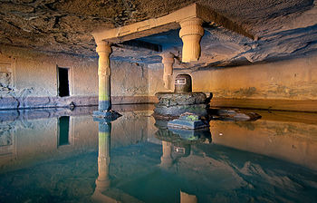
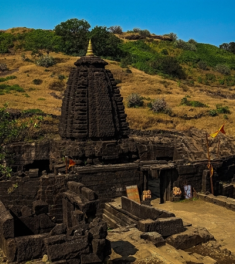

No, permission is not needed for the trek.

The Harishchandragad :
Basic Info About Location Harishchandragad:
Harishchandragad is located in Maharashtra. district of Ahmednagar. Surrounded by the beautiful scenery of the Western Ghats, this fort is roughly 1,424 meters above sea level.
In the surrounding region, nature lovers and adventurers can enjoy lush greenery, rolling hills, and flowing waterfalls. The fort's strategic location atop a steep hill provides scenic views of the scenic Sahyadri mountain range and the huge Konkan region.
Entry to Harishchandragad is primarily via the base village of Pachnai, from where trekkers embark on the Kokankada Trek. For a unique experience in nature, trekkers travel through twirling trails, dense forests, and rocky terrain on their way to the fort.
Harishchandragad Visitors can explore its ancient temples, caves, and fortifications, each telling a story of ancient eras. From the towering cliffs of Kokankada to the sacred Harishchandreshwar Temple, the fort is a gem of historical and architectural wonders. It's always considered as one of the Instagrammable treks in India.
What Is the Best Time to Visit Harishchandragad?Trekking is permitted here year-round! However, the greatest time to visit is during the post-monsoon season (September to November), when everything is overgrown and beautiful.
Places to Check Out: Look out for the historic Harishchandreshwar Temple, Taramati Peak, Konkan Kada Caves, and Kokankada Cliff as you climb. They're all a part of the journey!
Places to visit near Harishchandragad :
- Malshej Ghat:
- Bhandardara:
- Randha Falls nearby.
- Kalsubai Peak.
Harishchandragadh Backpack:Things to Carry for Harishchandragadh and konkan kada Trekking :
- Comfortable shoes (Avoid sneakers. Try to wear sports shoes with good grip).
- The luggage is packed in a good rucksack, all luggage is wrapped properly.
- Light clothes (avoid shorts; full pants will be helpful to avoid scratches from brushwood).
- A backpack with water (2-3 litres).
- Rain Poncho (Rainy Season) / Hoodies / Jacket / Winchester for winter and summer season.
- Dry snacks / Protein Bar / Electral – energizer drink.
- A flashlight or headlamp.
- Trekking poles (Optional).
- Personal first aid and personal medicine if any.
- Toiletries (Napkin, Facewash, Tissue, Toilet paper, Sanitizer).
Nearby Places to Visit Harishchandragad:
Harishchandragad Kedareshwar Cave:
According to the locals, the temple was constructed in the sixth century inside the Harishchandragad fort by the Kalachuri dynasty. Changdev, one of the greatest philosophers, lived here and composed the well-known text Tatvasaar in the fourteenth century. In the area of the temple are three caverns.
Kedareshwar Temple Harishchandragad:
This area contains a 5-foot Shiva Lingam in one of its caverns. According to a concept, the four pillars of the Kedareshwar Temple have mythical significance in Hindu mythology in addition to being simple structural elements. The four yugas represented by each of these pillars are the Satya, Treta, Dvapara, and Kali yugas.
Things to Experience on Konkan Kada:
Konkan Kada is a well-liked tourist attraction situated in Maharashtra, India's Sahyadri mountain region. It is well known for its breathtakingly beautiful surroundings and uphill hiking routes.
Konkan Kada is famous for its overhang, which provides breathtaking sweeping views of the hills and valleys in the area. Given its location on the edge of the Konkan region, the Marathi term "Konkan Kada" approximately translates to "Konkan's edge".
In addition to hiking, guests can enjoy camping in the gorgeous surroundings and see breathtaking sunrises and sunsets from Kokankada's vantage point. Kokankada is an essential travel destination for adventure seekers, environment lovers, and everyone else hoping to take in the wonder of Maharashtra's Sahyadri highlands.
Where is Konkan Kada located?
Konkan Kada is a well-liked tourist attraction situated in Maharashtra, India's Sahyadri mountain region.
Harishchandragad Taramati Peak:
Trekking enthusiasts and nature lovers often visit Taramati Peak. There are rocky sections, deep trees, and occasionally steep slopes to negotiate during the hike to Taramati Peak. Hikers are rewarded at the top with breathtaking views of the neighbouring valleys and the Western Ghats.
Can I do the Harishchandragad Sunrise Trek?
It's advisable to trek with a group of people, especially at night, as there is a high possibility of encountering wild animals. Be alert and avoid stepping out alone, especially if you are a beginner.
Geographical Information of Harishchandragad:
- Harishchandragad Region: Western Ghats, Maharashtra, India.
- Height Above Sea Level: 1,424 meters.
- Trek Distance: Around 5 kilometers.
- Trek Duration: 4-5 hours.
- Difficulty Level: Challenging but doable.
- Base Village: Pachnai or Khireshwar (Two available base points).
- Harishchandragad Trek Distance from Pune: 162 kilometers.
- Harishchandragad Trek Distance from Mumbai: 189 kilometers.
History of Harishchandragad:
Harishchandragad has a long and rich history due to its ancient origins. The Kalachuri dynasty built this ridge fort between the sixth and seventh centuries, during their rule. Its rough landscape has been changed over the years by all of the dynasties and kings that have ruled it.
Because of the fort's advantageous location, the Marathas and Mughals, two kingdoms that had fought several wars to claim its gorgeous position, wanted to use it as a defence.



Real Story of Raja Harishchandra:
Harishchandra was a great and honest ruler who once reigned over the ancient kingdom of Ayodhya. He was recognized throughout the country for his relentless devotion to truth and justice. His rule was marked by wealth, peace, and harmony among his subjects.
One day, as King Harishchandra was managing the matters of his kingdom, a thinker named Vishwamitra approached him with a request. Vishwamitra desired shelter in Ayodhya and asked the king's help in performing a big Yagna. King Harish Chandra quickly agreed and committed his whole support to the sage.
However, at the Yagna, disaster pounded. Vishwamitra put Harishchandra's commitment to truth to the trial by asking that he give up his kingdom, fortune, and family. Harishchandra, resolute in his dedication to honesty, volunteered to sacrifice all without hesitation. He lost his kingdom and fortune, as well as his loving wife, Queen Taramati, and son, Rohitashva.
Harishchandra set off on a journey of difficulties and hardships after losing everything. He took on the duty of a common caretaker at a cremation site, where he laboured diligently to support himself and his family. Despite several difficulties and decoys, he maintained his commitment to the truth.
Meanwhile, Queen Taramati and Prince Rohitashva found themselves working for Vishwamitra, a cruel and selfish Brahmin.
Years passed, and word of King Harishchandra's resolute commitment to truth travelled far and wide.
Finally, the gods were stirred by Harishchandra's uncompromising purity and devotion. They appeared before him, fixed his empire, and reunited him with his family. The people of Ayodhya were overjoyed at the homecoming of their beloved king and family.
As a sign of his struggles and accomplishments, King Harishchandra built a magnificent fortress atop a mountain overlooking his empire. This fortification became known as Harishchandragadh, a tribute to the ongoing tradition of truth and justice. As time progressed, it became a revered tourism destination, attracting visitors from all over the world seeking spiritual enlightenment and the truth.
Also, Kokan Kada is an amazing ridge with scenic views of the area that sits atop Harishchandragad. According to mythology, King Harishchandra once stood atop Kokan Kada, looking down at the earth below with gratitude and humbleness. Thus, even in the face of hardship, the story of Raja Harishchandra, Harishchandragadh, and Kokan Kada continues to delight listeners and motivate them to seek truth, values, and tireless commitment.
How to Reach Harishchandragad:
Private transport:
a) From Mumbai
Mumbai - Kalyan - Murbad - Tokawade - Malshej Ghat - Khubi Phata - Pachnai Village
b) From Pune
Pune - Sangamner - Akole - Ratanwadi Village
c) From Nashik
Nashik City - Ghoti - Bari Village.
Public transport:
a) Nearest Railway Station: If you want to travel by railway then The nearest major railway station is Kalyan. From Kalyan, you can take a cab or take a state transport bus to Khireshwar village, which is the base village for the Harishchandragad trek. Or, you can take a train to Khopoli station and then take a cab or take a bus to Khireshwar village. This railway station is around 90 km from the Harishchandragad base village of Khireshwar.
b) Nearest Airport: Pune Airport, which is around 120 km from Khireshwar.
Most Frequent Questions
Do I need permission for the Harishchandragad Fort Trek?
Is camping allowed on the Harishchandragad Fort Trek?
Yes, camping is allowed at designated spots and the base village.
Are there water sources on the Harishchandragad Fort trek?
There are some natural water sources, but it’s recommended to carry your own water.
Is there food available on the Harishchandragad Fort trek?
Yes, local food facilities are available at the base village.
Is the Harishchandragad Fort Trek difficult?
It's a moderate-level trek, suitable for beginners with basic fitness.
Are there any wild animals on the Harishchandragad Fort trek?
Possibly yes, so keep an eye out and take necessary precautions.
Are there changing rooms available at Harishchandragad?
Yes, basic facilities are available at the base village.
Are there any entry charges for the Harishchandragad trek?
No, there are no specific entry charges for trekking.
Where is Harishchandragad Fort located?
Located in Maharashtra, India, about 200 km between Pune and Mumbai.
Can the Harishchandragad Fort trek be done alone?
It’s safer to trek with friends, but experienced trekkers can go solo.
What is the best time to do the Harishchandragad Fort trek?
The best time to visit is post-monsoon or winter.
What is the highest altitude of Harishchandragad Fort?
The peak is about 1,424 meters high.
Where does the Harishchandragad Fort trek start?
The trek starts from the base villages – Pachnai or Khireshwar.
Can we do the Harishchandragad Fort trek at night?
Night treks are possible, but daytime trekking is safer.
Is there a mobile network at Harishchandragad Fort?
There is limited network coverage depending on the area.
Are ATMs available at Harishchandragad Fort?
No, ATMs are not available, so carry cash.
Are washrooms available at Harishchandragad Fort?
Basic washroom facilities are available at the base village.
Is parking available for the Harishchandragad trek?
Yes, parking is available at the base village with minimal charges.